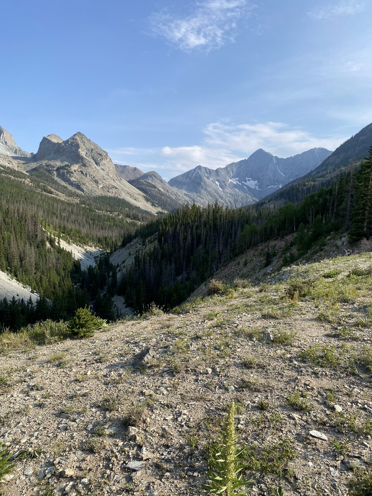
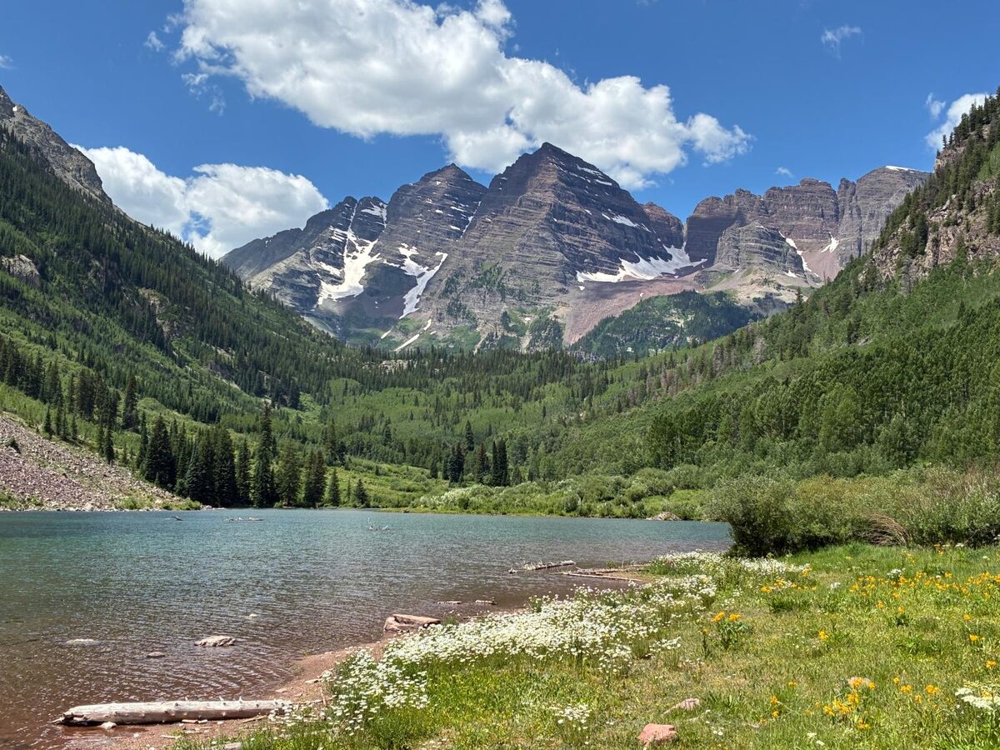
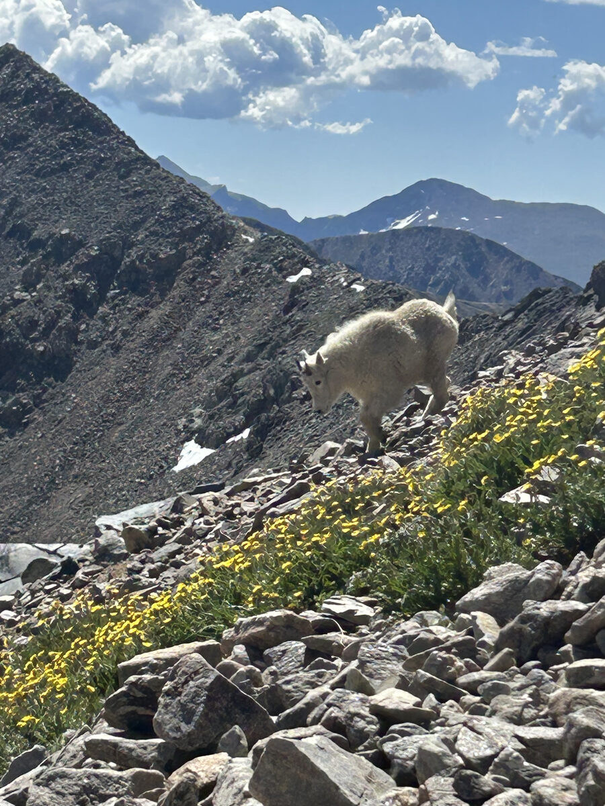
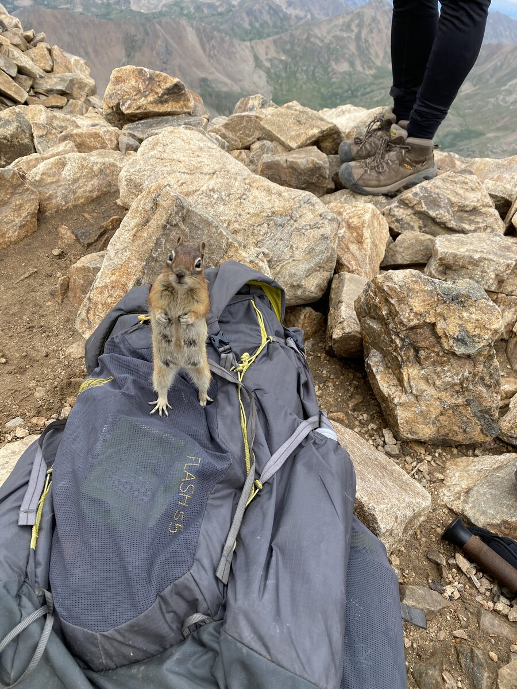

About Me
I'm Sam. I'm doing a dual degree at CU Boulder and research in the Donaldson Lab.
Outside of class I run, camp, and climb. I've done 57 of Colorado's 14ers and I'm hoping to finish them soon.
Camp Muir, Mount Rainier National Park

Little Bear Peak and Blanca Peak, CO

Maroon Bells, Aspen, CO

Baby mountain goat, Grays Peak, CO
Ellingwood Point and Blanca Peak from Little Bear Peak, CO

A squirrel begs for food on the summit of Mount Elbert, CO